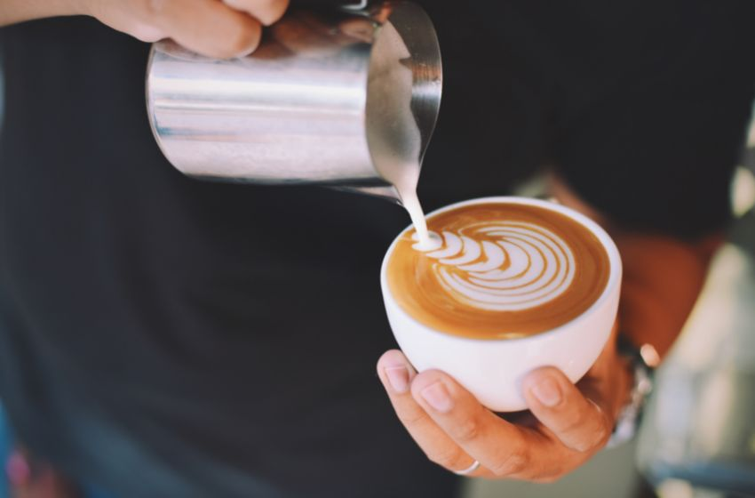
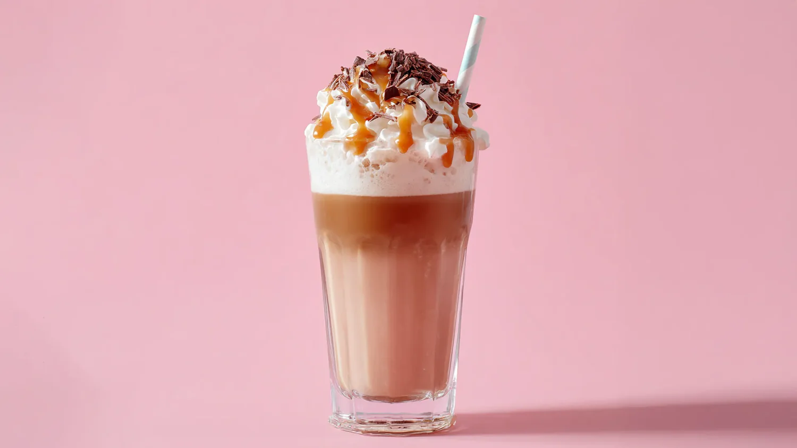
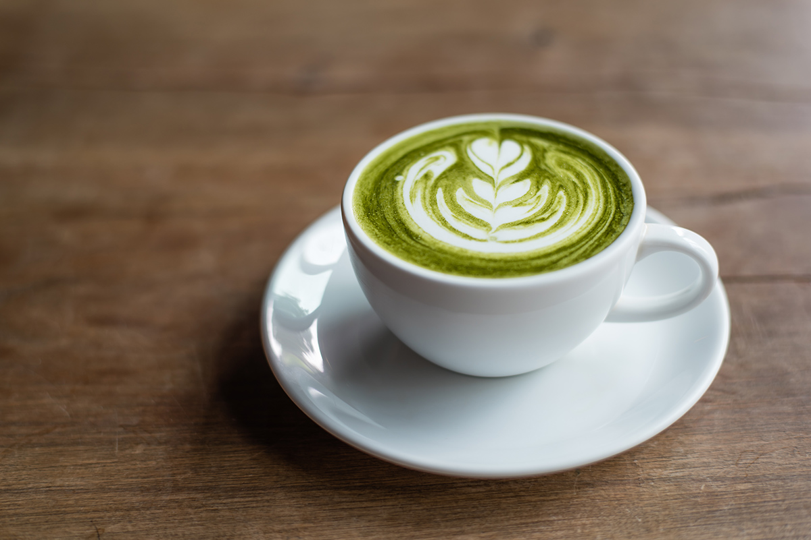

Sedang mencari tempat ngopi santai dengan suasana nyaman, harga terjangkau, dan tampilan yang estetik? Inilah jawabannya. Setengahenam Cafe hadir sebagai salah satu tempat nongkrong di Jakarta yang menawarkan pengalaman ngopi berbeda, menyatukan kenyamanan tempat dengan kualitas sajian kopi premium yang ramah di kantong.
Bagi banyak masyarakat perkotaan, kedai kopi bukan sekadar tempat membeli kafein, melainkan ruang ketiga setelah rumah dan kantor. Oleh karena itu, kami mendesain ruang kami dengan cermat—menggabungkan elemen arsitektur modern minimalis dengan pencahayaan hangat untuk menciptakan atmosfer yang menenangkan sejak langkah pertama Anda masuk.
Kopi Susu Senja: Kelezatan Signature yang Khas
Kami memahami bahwa kualitas kopi dimulai dari bahan terbaik. Oleh karena itu, setiap sajian kopi susu kami dibuat dari biji kopi pilihan yang telah melalui proses roasting sempurna, menghasilkan aroma yang kuat dan rasa yang seimbang. Salah satu menu favorit yang wajib Anda coba adalah Kopi Susu Senja, perpaduan creamy dan manis yang pas, cocok untuk menemani waktu santai Anda di sore hari.

Caramel Macchiato: Sentuhan Manis yang Lembut
Bagi pecinta kopi dengan sentuhan manis, Caramel Macchiato kami siap memanjakan lidah Anda. Dengan kombinasi espresso, susu, dan caramel yang lembut, minuman ini menjadi pilihan tepat untuk Anda yang ingin menikmati kopi dengan rasa yang lebih ringan namun tetap berkarakter. Lapisan visualnya yang cantik juga menjadikannya salah satu menu paling estetik dan sering dibagikan oleh pelanggan di media sosial mereka.

Matcha Latte: Cita Rasa Autentik Grade Seremonial
Tidak hanya kopi, kami juga menghadirkan varian matcha latte berkualitas tinggi. Dibuat dari matcha ceremonial grade, minuman ini menawarkan rasa autentik khas Jepang yang lembut, sedikit pahit, namun tetap menyegarkan. Sangat cocok untuk Anda yang ingin mencoba alternatif selain kopi tanpa mengurangi sensasi premium dan ketenangan batin saat menyesapnya.

Croissant Fresh: Teman Sempurna Secangkir Kopi Anda
Untuk melengkapi pengalaman ngopi Anda, kami juga menyediakan croissant fresh yang renyah di luar dan lembut di dalam. Dipanggang setiap hari (freshly baked), croissant kami menjadi pilihan yang pas untuk menjadi pasangan segala jenis minuman yang Anda nikmati. Kehangatan mentega berpadu dengan aroma kopi yang harum akan membangkitkan selera Anda.

Suasana Minimalis Modern: Tempat Terbaik untuk WFC dan Produktivitas
Dengan konsep interior modern minimalis, coffee shop kami menjadi tempat ngopi estetik yang cocok untuk bekerja (Work From Cafe), bersantai, maupun berkumpul bersama teman. Kami menyediakan berbagai fasilitas pendukung seperti koneksi internet Wi-Fi berkecepatan tinggi, stop kontak yang memadai di hampir setiap sudut meja, serta kursi ergonomis yang menjamin kenyamanan Anda meski harus bekerja selama berjam-jam.
Lokasi strategis menjadikan kami salah satu tempat ngopi di Jakarta Selatan yang murah dan estetik, tanpa mengorbankan kualitas rasa. Area semi-outdoor kami juga menjadi pilihan favorit bagi mereka yang ingin menikmati angin sore yang sejuk sambil berbincang santai.
Jadi, jika Anda sedang mencari tempat ngopi murah dengan kualitas premium dan suasana yang nyaman, tidak perlu ragu lagi. Datang dan rasakan sendiri pengalaman terbaik di tempat ngopi estetik yang siap menjadi spot favorit baru Anda di Jakarta.